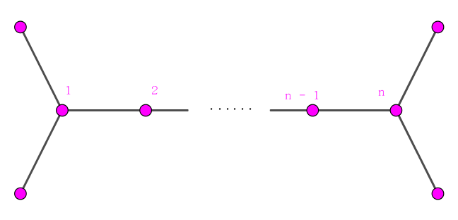
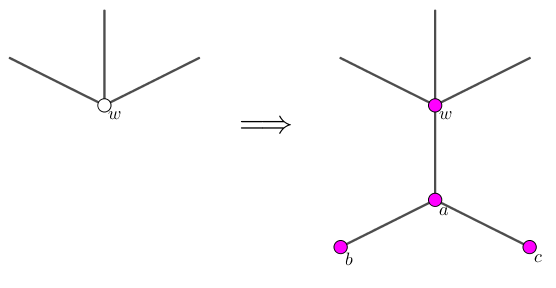

"井字棋" 是一款经典的小游戏。我们可以将这个游戏从 $3 \times 3$ 的网格图中推广到一棵树上，暂且称为 "树上井字棋"。
在本题中，"树上井字棋" 的规则如下：
给定一棵树，树上若干个节点已经被涂成了白色，剩下的节点未被涂色。
有两个玩家 W 和 B 轮流操作。W 先手，在 W 的回合，他每次可以选择一个未被涂色的节点，将其涂成白色；在 B 的回合，他每次可以选择一未被涂色的节点，并将其涂成黑色。
如果某一时刻，出现了一个点数为 $3$ 的同色链，则涂改颜色的玩家胜。如果所有节点均被涂上颜色，却不存在点数为 $3$ 的同色链，则游戏平局。
给定树的初始状态，你需要判断双方在最优策略下游戏的结果。
第一行包含一个正整数 $T$ ($T \leq 50000$)，表示数据组数。
对于每组数据，第一行包含一个正整数 $n$ ($\sum n \leq 5 \times 10^5$)，表示树的点数。
接下来 $n - 1$ 行，每行两个正整数 $u, v$ ($1 \leq u, v \leq n$)，描述树上的一条边。
最后一行包含一个为 $n$ 的，只有 $\texttt W, \texttt N$ 两种字符构成的字符串。第 $i$ 个字符为 $\texttt W$ 表示树上节点 $i$ 为白色，第 $i$ 个字符为 $\texttt N$ 表示节点 $i$ 尚未染色。
对于每组数据，输出一行，包含一个字符串，为 White、Draw、Black，描述最优策略下游戏的结果——即胜者对应的颜色，或说明该游戏为平局。
先考虑没有初始白色节点的情况。
此时，容易证明 B 不可能胜。反设 B 存在必胜策略，则 W 在一开始使用 B 的策略就一定能取胜。
考虑树的最大度 $\Delta \left( T \right)$，
如果 $\Delta \left( T \right) \geq 4$，不妨设存在边 $(a, b), (a, c), (a, d), (a, e)$。
令 W 染 $a$，则 B 至多只能染 $b, c, d, e$ 中的一个节点，不妨设 B 没有染 $b$。则 W 染 $b$，$b$ 仍然只能染 $c, d, e$ 中的一个节点。因此 $c, d, e$ 中剩下一个未染色的，W 将其染成白色，就能得到点数为 $3$ 的白色链。
如果 $\Delta \left( T \right) \leq 2$，则树是一条链，则此时 B 一定存在配对方案阻止 W 获胜。
接下来的情况就只有 $\Delta \left( T \right) = 3$ 了。
任取 $a$ 满足 $d(a) = 3$。设 $a$ 的邻点为 $u, v, w$。则这三个点中如果有两个非叶节点，则 W 也能赢。
这是因为，设 $u \to u', v \to v'$。则 W 染 $a$，由对称性可以设 B 不染 $u$。然后 W 染 $u$，那么 B 只能在 $u', v, w$ 中染至多两个，W 染剩下的一个即可获胜。
因此，如果要平局，任何一个 $3$ 度点都有两个邻点是叶节点。
而如果有 $3$ 个 $3$ 度点，设为 $a, b, c$，则考虑它们的联合 LCA $g$，它显然也是一个 $3$ 度点。
然而 $g$ 不满足有两个邻点是叶节点的性质，因此这种情况还是 W 必胜。
于是 $3$ 度点的个数为 $1$ 或 $2$。
当 $3$ 度点只有 $1$ 个时，容易证明一定是平局。
当 $3$ 度点个数恰为 $2$ 个时，此时的图一定长这样：
如果总点数为奇数 ($n = 2 k + 1$)，则先手存在必胜策略。W 染 $2 \Rightarrow$ B 染 $1 \Rightarrow$ W 染 $4 \Rightarrow$ B 染 $3 \Rightarrow$ …… $\Rightarrow$ W 染 $2 k \Rightarrow$ B 染 $2 k - 1 \Rightarrow$ W 染 $2 k + 1$，胜。
如果总点数为偶数，则先手不存在必胜策略。
综上，我们已经把 "空树" 的所有情况讨论清楚了。这可以在 $O \left( n \right)$ 时间内判断。
接下来考虑初始时有白色节点的情形。
首先，要认识这一点：有了白色节点一定对 W 有利。同理，如果凭空多出来黑色节点则一定对 B 有利。
这里 "对 W 有利" 的意思是，如果原先状态是必胜的，则现在仍然是必胜的；如果原先状态是平局的，新状态有可能必胜。
我们的策略是，对于树上的每一个白节点 $w$，创建三个节点 $a, b, c$，连接 $\left( w, a \right), \left( a, b \right), \left( a, c \right)$，如下图所示：
此时，节点 $w$ 的功能是：给当前的玩家白送一个颜色为他所染的颜色的点。
显然，一旦有机会，玩家肯定都会往这方面考虑 (不要白不要嘛，再加上上面说过，多了自己的节点一定对自己有利)。因此，肯定是最早的玩家 W 会抢。
这是为什么呢？因为如果某玩家选了 $w$，则对方必须选 $a$ (否则 $w$ 直接胜)，于是又轮到了他。相当于白送一个点。如果对方选了 $b$ (或 $c$)，则他直接把对应的点堵上即可。因此对方无法指望在这块区域获胜 (这也是恰好构造 $3$ 个点的巧妙之处)。
如果某个玩家选了 $a$，类似也可证明这样一定是亏的 (对自己不利)。
因此，先手在一开始一定会将所有这样的 $w$ 染成白色，于是就相当于初始树的情形，且这些枝叶不影响游戏的胜负性。
也就是说，我们通过了增加了 $O \left( n \right)$ 个点，将问题转化为了没有白色节点时的情形。故总时间复杂度仍然是 $O \left( n \right)$。
#include <bits/stdc++.h>
#define adding(x) for (cnt += 2 * ((x) >= n), i = first[x]; i; i = next[i]) cnt += to[i][deg] == 1;
const int N = 1000054, M = N * 2;
int n, V, E = 0;
int to[M], first[N], next[M], deg[N], lu[N];
char s[N];
inline void addedge(int u, int v) {
to[++E] = v, next[E] = first[u], first[u] = E, ++deg[u];
to[++E] = u, next[E] = first[v], first[v] = E, ++deg[v];
}
bool solve() {
int Delta = *std::max_element(deg, deg + V), i, v, *p, cnt = 0;
if (Delta >= 4) return true;
if (Delta <= 2) return false;
switch (std::count(deg, deg + V, 3)) {
case 1:
v = std::find(deg, deg + V, 3) - deg; adding(v);
return cnt < 2;
case 2:
p = std::find(deg, deg + V, 3); adding(p - deg);
v = std::find(p + 1, deg + V, 3) - deg; adding(v);
return cnt < 4 || (V & 1);
default: return true;
}
}
void work() {
int i, u, v;
scanf("%d", &n), V = n, E = 0;
memset(first, 0, n << 3), memset(deg, 0, n << 3);
for (i = 1; i < n; ++i) scanf("%d%d", &u, &v), addedge(--u, --v);
scanf("%s", s);
for (i = 0; i < n; ++i) if (s[i] == 87) addedge(V, i), deg[V++] += 2;
puts(solve() ? "White" : "Draw");
}
int main() {
int T;
for (scanf("%d", &T); T; --T) work();
return 0;
}
坑1：实际实现时，可以不加 $3$ 个点，可以只加那个 $a$ 点，然后强行将它的度数调为 $3$。然后数 $3$ 度点的相邻叶节点个数时，直接对这些点 $+ 2$ 即可。